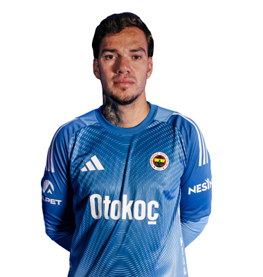
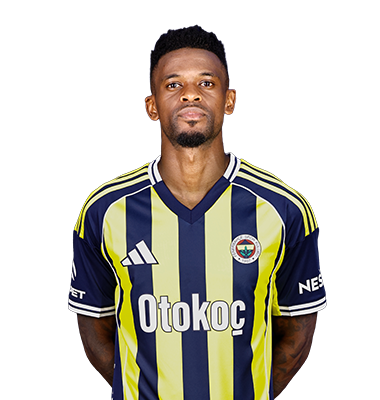
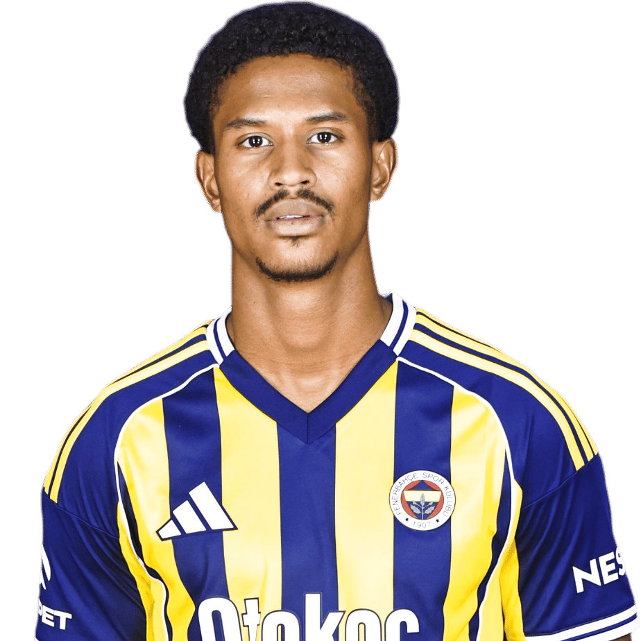
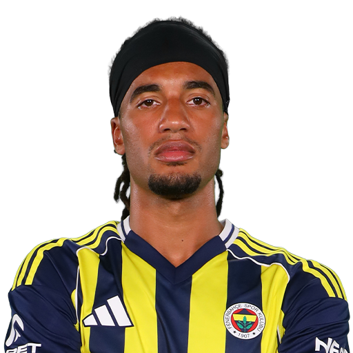
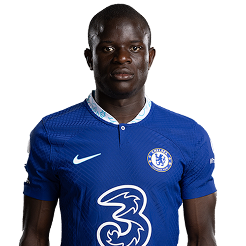
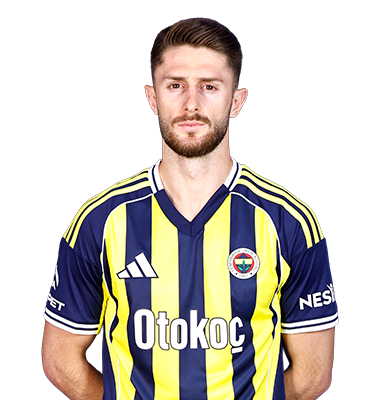
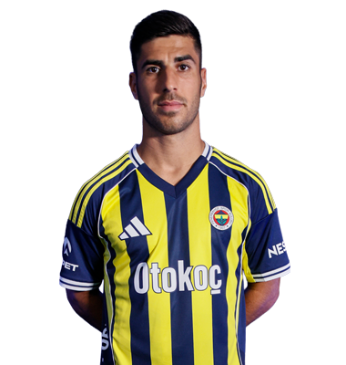
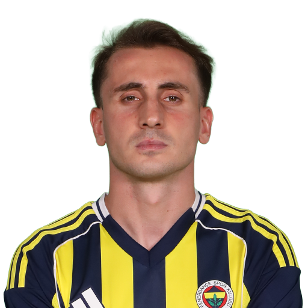
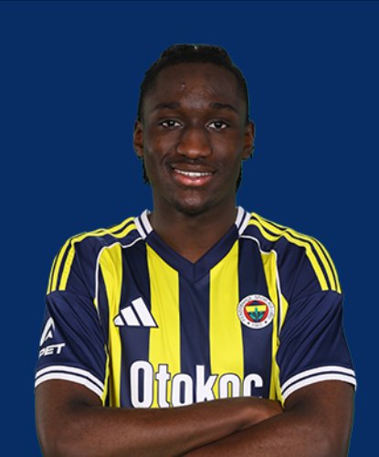
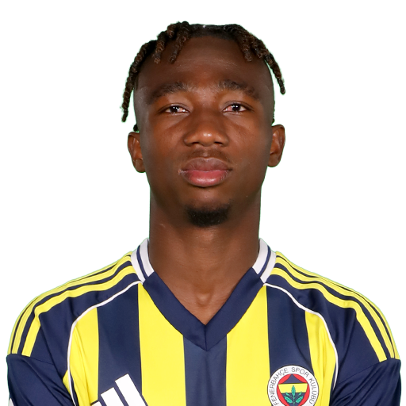

Fenerbahçe'nin as kadrosunda yer alan oyuncular ve genel bilgileri aşağıdadır:

Brezilyalı tecrübeli kaleci Ederson Moraes 32 yaşındadır ve kalede takımın en büyük güvencesidir.

32 yaşındaki Portekizli sağ bek, savunmadaki hızı ve hücuma verdiği destekle dikkat çekmektedir.
Slovakya milli takımının da vazgeçilmezi olan 31 yaşındaki stoper, savunmanın merkezinde görev yapmaktadır.

24 yaşındaki Hollandalı yetenek, hem sol bek hem de stoper pozisyonlarında dinamizmiyle öne çıkıyor.

23 yaşındaki İngiliz sol bek, fiziksel gücü ve atletizmiyle sol kanatta takıma büyük katkı sağlamaktadır.

Fransız dünya yıldızı 35 yaşındaki ön libero, bitmek tükenmek bilmeyen enerjisiyle orta sahanın dinamosudur.

27 yaşındaki Türk milli orta saha oyuncusu, mücadeleci yapısı ve top kapma becerisiyle takımın kalbinde yer alır.

30 yaşındaki İspanyol yıldız, hücum hattındaki oyun zekası ve etkili sol ayağıyla skor üretmektedir.

27 yaşındaki milli kanat oyuncusu, hızı ve bitiriciliğiyle rakip savunmaları zorlayan önemli bir hücum silahıdır.

Hücum hattına dinamizm katan genç ve yetenekli oyuncu, hızıyla rakiplerine karşı üstünlük kurmaktadır.

23 yaşındaki Malili forvet, patlayıcı gücü ve gol yollarındaki etkinliği ile hücumda fark yaratmaktadır.